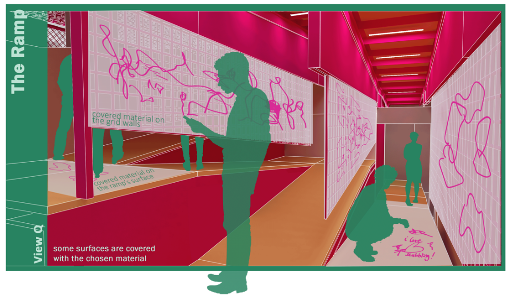
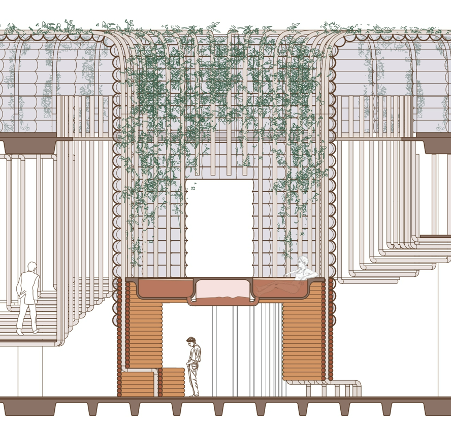
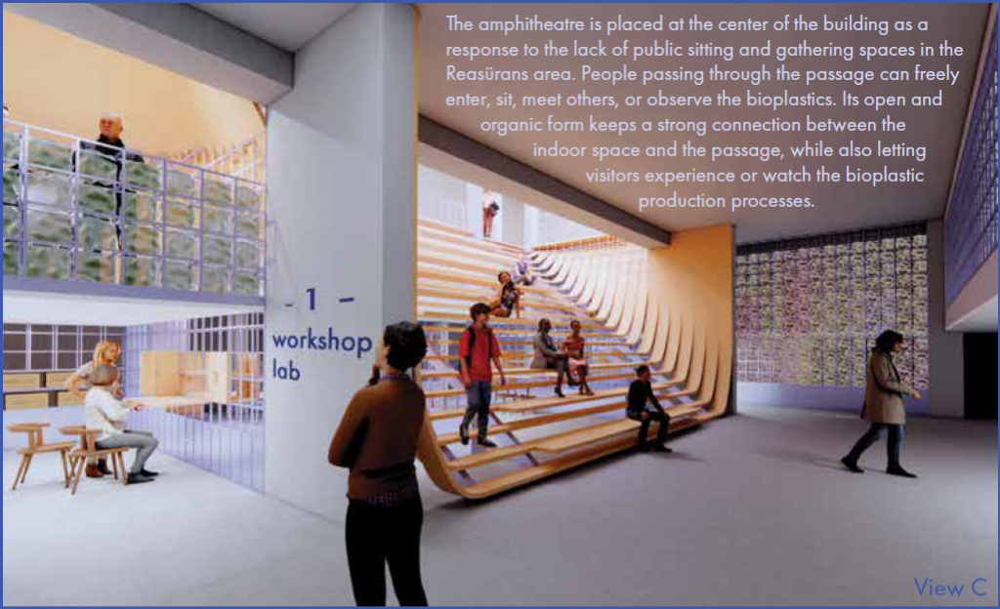

MEF University
Istanbul, TürkiyeBachelor’s Degree in Architecture (Double Major)
While only six or seven stars of the Pleiades are typically visible to the naked eye, the cluster actually contains over a thousand stars.

“How can we make this labour visible again?”
A counter-monument and living civic archive spatializing the invisible bodily labor, collective memory, and forgotten human costs of urban infrastructure.

“Is doing nothing doing something?”
A responsive street-level sanctuary examining non-human feline agency, temporal pauses, and interspecies coexistence in urban Istanbul.

“Can you escape the fire?”
An agent-based architectural simulation analyzing egress dynamics, behavioral panic thresholds, and bottleneck flow rates during emergency building evacuation scenarios.

“Is there life because there is death?”
A restorative sanctuary designed around soil and clay immersion, connecting natural earth cycles to human life to cultivate physical and spiritual wellbeing.

“How many microplastics can we eat in a day?”
Fully biodegradable agar and starch bio-composite surfaces challenging petrochemical permanence and consumer packaging contamination.
I approach design as an open inquiry into the systems, assumptions, and environments shaping how we inhabit space. Rather than executing closed briefs, my practice operates as a continuous dialogue: deconstructing institutional norms, unearthing overlooked site memories, and prototyping living, weathering materials that return questions back to the public.
All 12 projects in the portfolio develop through three interconnected modes of inquiry—moving from deconstruction, to site excavation, to tactile material prototyping:
Spatial briefs are not neutral instructions. Projects begin by interrogating institutional assumptions: who benefits, whose labor built the space, and whose presence is erased. Design becomes an investigative tool to dismantle what is taken for granted.
Context is treated not as an empty plot, but as an unwritten physical archive. The practice excavates conditions conventional architecture ignores: invisible municipal labor, street animals, passive microclimatic shadows, and sedimentary site histories.
Materials are not static decorative surfaces; they possess agency, age, breathe, and decompose. Questions achieve resonance when tested through physical touch: raw adobe immersion, circular biopolymers, tactile timber joinery, and interactive digital traces.
A project does not shut down dialogue with a definitive answer; it sharpens the inquiry and equips visitors with new ways of seeing the ordinary.
Materials are not static, disposable surfaces. They respire, conduct heat, weather, and decompose. Designing with materiality means designing with time.
Architecture must shelter overlooked laborers, stray organisms, and fragile ecologies. A design is judged by how generously it shares room with the vulnerable.
Philosophical and political questions achieve resonance only when tested through physical touch, sensory thresholds, and rigorous prototypes.
“Some questions stay with me longer than their answers.” A quiet repository of questions asked in everyday life, observations on materials, human traces, spaces, and unfinished thoughts.
I approach design as a way to examine the assumptions and systems shaping how people perceive, inhabit, and relate to the world. Drawing on philosophy and psychology, I begin by questioning the brief itself: whose perspectives it centers, what it leaves unspoken, and what possibilities it overlooks.
Through research, spatial design, and interactive media, I translate these inquiries into tangible experiences that invite reflection and connection. I explore biomaterials and emerging systems as tools for this work, asking how they can make hidden conditions perceptible and open new ways of seeing, understanding, and engaging with our surroundings.
Words are really important for her. She likes to give meaning to every word she uses in her projects. To understand her mind you need to understand her words first.
Completed training in coding and game development with Unity, game art, game UI/UX, and AI-assisted workflows.
Completed training in Design and Production, Robotics and Coding, Electronics Programming, Internet of Things (IoT), Advanced Robotics, Software Technologies, and Cybersecurity.
Contributed to the interior design and phasing strategy for the competition proposal, producing high-detail 3D models, technical drawings, and architectural renders.
Contributed to the interior design and physical implementation of an Intimissimi Uomo retail store at Kanyon, following the project from initial design development through on-site execution and completion.
Reviewed and graded assignments for DGD 101: Introduction to Game Design, evaluating student work according to course expectations and design guidelines.
Assisted with course material preparation and attendance tracking for a second-year History and Theory of Interior Design I course.
Researching and documenting how fire reacts to different architectural materials and how it spreads dynamically through school buildings. Creating a 1:1 detailed 3D model of MEF University to implement realistic fire propagation and emergency evacuation simulations based on empirical data.
Developed a proposal to address limited planting space in an existing patio, integrating new growing areas while preserving and highlighting the patio’s existing character.
Contributed directly to the participatory design process and physical hands-on timber construction of a schoolyard resting, play, and reading area for Lütfi Banat Primary School.